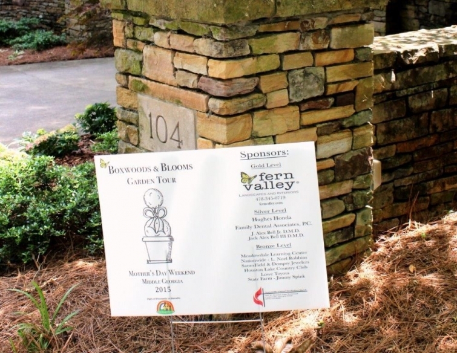

.png)
.PNG)
.PNG)
.PNG)
.PNG)
.PNG)
.JPG)
.JPG)
.PNG)
.PNG)


One of the Methodist churches in our area hosts a garden tour every spring. ¬†This year’s event was held last weekend – just in time for Mother’s Day. üôÇ
So my mother and I spent last Saturday walking through several wonderful gardens, doing a little shopping (in the garden center at Lowes no less!), and eating lunch at Cheddar’s. ¬†(You should try their Monte Cristo sandwich with raspberry preserves…very yummy.)
.jpg) My father treated us to the tour. (Thank you Daddy!)  When we purchased our tickets we were happy to see that one of the gardens belonged to the general with whom my father worked for many years. So we headed to his home first.
My father treated us to the tour. (Thank you Daddy!)  When we purchased our tickets we were happy to see that one of the gardens belonged to the general with whom my father worked for many years. So we headed to his home first.
 His yard was quite large, and it fronts a lovely lake.  The general was quick to tell us that his wife was responsible for all the beautiful landscaping.  He humbly admitted to building brick walks and moving large plants and rocks.  His wife is a very petite woman, and she is proof that gardening must be good exercise!
His yard was quite large, and it fronts a lovely lake.  The general was quick to tell us that his wife was responsible for all the beautiful landscaping.  He humbly admitted to building brick walks and moving large plants and rocks.  His wife is a very petite woman, and she is proof that gardening must be good exercise!
Isn’t the view of the lake just perfect from his yard? ¬†(He’s talking with my mother in the next photo.)
I think just sitting out on their dock would be so peaceful; don’t you?
This little pool was also part of their yard.  My mother was intrigued with the ground cover you see in the foreground of the photo.
The next garden we toured was quite different from the one that belonged to the general and his wife.  This one was designed and installed by a professional landscaping firm, Fern Valley.
Just look at all those ferns that were planted in mass there!
This was my mother’s favorite of all the gardens we toured. ¬†She said it gave her a feeling of being in the mountains.
As part of the garden tour, we were allowed to step inside the foyer of the house. ¬†Here is the living room. There was a large aquarium off to the right and a small koi pond as you walked in the door (sorry my photo of it was too fuzzy to see anything. üôÅ )
In the back of the house was a pool with a small waterfall and bridge.
Back around the front was this planting of daylilies.
We left this home, enjoyed lunch nearby, and then made our way to the next home – located on another lake.
Again, we were told that the wife did all the gardening in the yard.  I loved that this one had so many little places to sit and relax.
This fountain area reminded me of Savannah.
For some reason, this next photo of the river birch tree with the boxwoods was my favorite of all that I took on the tour.
Here is their view of the lake. Loved that light down there by the water!
Another sitting area…
I liked the stonework here.
After that lakeside garden we drove to the home of a former educator.  She worked several years at the office of our board of education but has since retired.  She says that she now spends her time gardening Рand she is the one responsible for this beautiful one here.
Those hostas were amazing!
Great stonework…
She had quite a few roses in her garden (and a pool that I somehow did not get a photo of.)
We left there and went to our final stop – a small, but sweet yard…again with many rose bushes…
and a couple of seating areas.
And that was our Saturday.  Lots of inspiration for what I would like to do in our yard!  Once retirement rolls around in a couple of weeks, I hope to get to work on it. (It needs a lot of it.) Do you do much work in your yard?
We’d love to hear about it.


.PNG)
I wanted to try to get to this garden tour this year, but my husband and I ended up planting fifteen Nellie R. Stevens hollies over the weekend. Thanks for posting pictures from the tour, it adds some inspiration to do more yard work. Have a wonderful weekend!
You did have such a nice Mother’s Day weekend! Garden walks are always fun and inspiring. Hosta is in abundance in my backyard. I keeping adding more, as they are great fillers and are so low maintenance. I love ferns too. I have just now started to add them as well. I spent all day yesterday planting flats of impatiens. Lots more to do, but Mother Nature brought rain last night, so I will give my body a much needed rest today. The sounds of birds tweets as I type and look out the kitchen bay window…Oh, Nature, soothing to the soul. üôÇ
I adore hostas and think they look so peaceful. I grew them in Georgia, but now on the AL coast, they don’t do as well. Boo hoo. Horticulture sadness.
Love the tour!
Retirement? Congratulations!!! Just in time to enjoy Jan Karon’s new book out in the fall. Hopefully you can do an update on her for us when the book comes out! I love visiting gardens, your pictures were beautiful. Thank you for sharing!
Great garden tour! We (hubby and I), have been reworking our beds. Removing overgrown evergreens, adding hostas….thinning ferns…and replacing what was lost during previous polar vortexes. Or is that vortices? Love to putz in the garden…and discover new to me nurseries! Planting flowers, and feeding birds, has become my new pastime! I think you are going to have a blast…I know we are! üòâ
These gardens were all just beautiful! Like all the other posters today, I love to garden too. I couldn’t help but wonder if deer are a problem at all for this area. I battled voles for years, they ate my hostas and any other tender plant. I finally started putting my hostas in large pots. About the time I got things the way I wanted, our deer population grew so much that they began eating the hostas like they were salads set out just for them. I have learned that deer don’t seem to like ferns, so over the last 5 years I have fallen in love with ferns, especially autumn fern. Mine are all up now with their beautiful reddish new fronds. Could the ground cover your mother was interested in be Creeping Jenny?
Beautiful gardens Kelly. I feel like my husband and I work in the yard all spring, and we have nothing as lovely as those to show for our hard work. This year we are mourning the loss of several roses as they have been affected by the disease that is killing so many. We still have several left but they say once it’s in your area you’re doomed:-(
Lots of inspiration in your lovely photos. Thanks for sharing.
Kelly,
We don’t do much yard work around here really. We just cut the grass and trim the trees. I have lots of potted plants everywhere…the front porch, the back screened in porch and deck, out on the driveway etc. We do have a garden though. We grow tomatoes, squash, peppers, lettuce, spinach, pumpkins and sunflowers. I enjoyed seeing your garden tour. It looks like you and your Mom had a nice time. Thanks for sharing! Take care.
Lovely! I think the ferns are my favorite (are those oak leaf hydrangeas behind them?), perhaps because I can relate that to my own ‘yard’ the most, though ours is not so formal or structured – actually looks pretty wild. We have tons of ferns here on our property in the mountains, and my husband and I are now learning to identify them and move some around. We have a little stream (no lake, though) that’s a good moist area for the ones that need it, but we also have huge swaths of native ferns (mostly New York and Christmas ferns) in our woods. My husband and I spend most of our time spring through fall messing with plants. Only have a little sun right around the house where most of the planted flowers are, but we also have lots of native wildflowers in the woods, especially spring ephemerals right now including pink lady’s slippers, trillium, and shooting stars. So, we spend time encouraging these and getting rid of poison ivy. I could spend all my time weeding and mulching – it’s endless, but I do small areas at a time and stop whenever I feel like it. It is very calming and meditative. We’ve planted over 50 rhododendron and most are blooming right now. Gorgeous!
I have loved gardening for quite some time, but after I retired, I took a Master Gardening Class, and really fell in love with gardening. I love playing in the dirt and watching new life sprout from it. Gardening is hard work, but it feeds my soul! Visiting nurseries, garden shops, and gardens is such a joy for me. Hope you will enjoy gardening as much as I!
Great post! Thanks for sharing!
What a lovely way to spend time with your mother! Beautiful memories for sure. I loved the sitting areas to rest and meditate. I don’t do very much of the gardering- really do not have a very green thumb and heat sensitive. Early morning and late evening is when I love to walk around our garden– I plan and my wonderful husband does the sweaty work! We have lots of bird baths, birdhouses and plants that attrack butterflies and birds. I really try with my herbal plants but still not very good with them.:( Hope to glean many ideas from your future blog and posts. Have a wonderful weekend with your daughter’s Welcome Home Celebration!! Prayers for travel mercies on her trip home!!
———————————————————————
It was a fun way to spend a Saturday for sure. Now I would have pegged you for a gardener, Louvina. You surprised me! Heat sensitive is not good. You are lucky that your husband takes orders/suggestions so nicely! Thanks for the travel prayers for our daughter. üôÇ
Kelly
Kelly,
I love garden tours. I liked all of the gardens you and your mom visited. I’ve always thought I’d like to live with a view of a like or pond or some body of water! I love working in my garden, although it’s a little stressful due to the drought. Are those pine needles that everyone has mulched with? Is that from winter prep, or summer? Do they sell the pine needles in your area? We use mulch mostly in the summer to help with water evaporation, but I am curious about the ground covering in all of your pictures.
xo,
Karen
———————————————————————
I agree that a view of some body of water would be wonderful. I was just drooling over some beach houses online this evening. I don’t know how you deal with the drought in your area, Karen. It would certainly make gardening a challenge. We use pinestraw year round. We rake up as much as we can when the trees drop their needles, but it is not enough for our entire yard. So we have to buy bales of it to finish out the yard. Not only do they sale it in bales here, but there are also people that drive to your house to sell you bales off the back of their truck! Pinestraw and boxwoods – big in the South. üôÇ
Kelly
I think that gardening is a form of meditation. I feel so at peace while gardening, and also afterwards. It’s my favorite activity May through October!
——————————————————————-
I believe you are right Susan. It is definitely a relaxing activity…AND you can see the results of your work (especially when weeding!)
Kelly
Kelly,
You will find after leaving the classroom that a lot will consume your time. How you choose to name it will determine your attitude… I don’t do “yardwork.” I “groom the garden.” Attitude is everything! Good luck on your future gardening projects. We look forward to seeing the results on your blog!
Carol
———————————————————————-
Good point Carol! Then I am looking forward to grooming the garden very soon.:) (among other things!)
Kelly